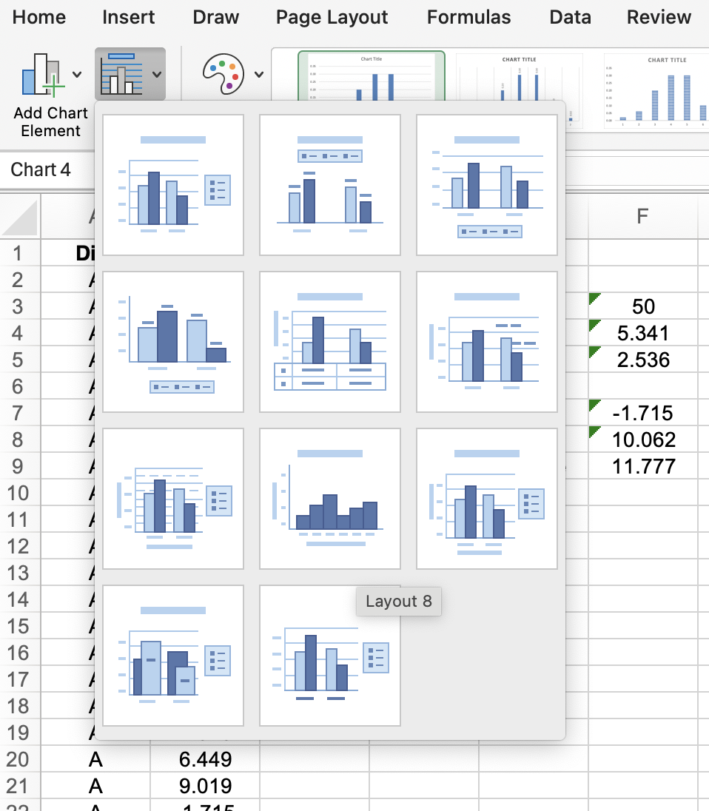

For this week’s worksheet, one is focusing on the bar charts in Excel.
Exercise 9.1 Example:
The worksheet explained the basic process of creating a bar chart, ensuring the right fields are selected once the bar chart is generated. These fields include the selection from the Add Chart Element . Please note that this feature may differ on a Windows machine, as the example shown is from a Mac.
From this menu, we changed the following aspects of the chart: Axis Title , then select Primary Horizontal Axis Title and rename the title to Area 1. Once again, from the Add Chart Element > Axis Titles > Primary Vertical Axis Title , a vertical label will be created, which we rename to Percentage and a Primary Horizontal Axis Title and renamed to Brand .
An alternative option suggests removing the gridlines; however, I find them visually appealing as they indicate the data points.
I have also included the data labels to show the figures from the spreadsheet, Add Chart Element > Data Labels > Outside End .
The outcome was a bar graph from Area 1 representing percentages. The chart clearly indicates that Brand A is the least preferred option at 15.7%, while Brand B is the second choice at 24.3%. Lastly, the Other Brand , with 60%, stands out as the most favoured option compared to the other two brands.
Exercise 9.1:
To finish this task, we will use the file Exe 9.1D.xlsx found in the Exercises folder. This document contains the percentage frequencies along with the bar chart generated in the earlier example. Construct a percentage frequency bar chart that illustrates the brand preferences for Area 2, using the format employed for the Area 1 results demonstrated previously. Then, place your newly created chart adjacent to the one for Area 1.
In Area 2, which I colour-coded to orange to differentiate it from Area 1, the data suggests that Brand A is the least favoured with 21.1%. However, comparing this to Area 1, which is only 15.7%, it seems that in Area 2, Brand A is slightly more favoured compared to Area 1. Brand B scored 33.3%, making it the second favoured brand, while the Other Brand scored 45.6%, resulting in only a 12.3% difference. Compared to Area 1, the difference between Brand B and the Other Brand is 35.7%.
In terms of frequencies, Brand A scored 19, Brand A scored 30, and the Other Brand scored 41. Once again, the difference between Brand B and the Other Brand in Area 2 is only 11. However, it must be noted that in Area 2, more data was collected, totalling 90, compared to Area 1, totalling 70. This results in a difference of 20, making it a slightly biased result.
Exercise 9.2:
For this exercise, we need to open the file Exa 9.2E.xlsx , which contains sets of data on frequencies and percentages based on Location A and Location B . From this, we need to create a clustered column bar chart that displays the percentage frequency of heather species in the two locations and then provide a brief interpretation of the findings.
Looking at the Frequencies chart, the Absent category for Location B , which is 20, is greater than Location A ,, which is 8, by a difference of 12. However, for the Spares category, Location A performs slightly better with 22 compared to Location B 's 14, showing a difference of 8. Additionally, in the Abundant category, Location A exceeds Location B , with A having 26 and B having 10, resulting in a difference of 16.
It should be noted that while it was not part of the required brief, I have also included the total count, which shows that Location A has 56 and Location B has 44. This results in a difference of 12, indicating that it is not a fair test since Location A has 12 more data sets than Location B . Additionally, this may also indicate that Location A is better for Spares and Abundant, while Location B clearly dominates in Absent.
The percentage chart also illustrates the data variation similar to the Frequencies; however, in Location B, the data indicate 45.5% Absent, while Location A has only 14.3% Absent, a difference of 31.2%, which is more than double that of Location A. The Spares from both locations are relatively close, with Location A at 39.3% and Location B at 31.8%, a difference of 7.5%. For the Abundant species, Location A records a higher percentage of 46.4% compared to Location B's 22.7%, resulting in a difference of 23.7%, nearly double that of Location B.
Once again, it should be noted that, similar to the data from the Frequencies, Location A has a higher total compared to Location B. If they both had an equal total in their locations, the percentage may differ.
Exercise 9.3 Example:
For this example, we need to create a histogram by opening the file Exa 9.3B.xlsa, which contains the relevant data. We filled in the following set of data using =Min(), =Max(), and then obtained the average of Max() – Min() for Diet A.
For the second part, we entered the upper-class boundaries (UCB) and set the values from 0, 2, 4 up to 12, based on the documentation. Since the minimum value is -1.715 and the maximum value is 10.062, it will start with a class of (-2, 0), and the remaining classes will be 0, 2, and 4.
In the third part, we entered the array formal =FREQUENCY(data_array, bin_array) and then pressed Ctrl+Shift+Enter; since I am on a Mac, the commands will be Command+Shift+Enter. The complete function looks like this =FREQUENCY(B2:B52, H4:H10).
By doing this, I have encountered a few issues, as a zero will be entered. I understand that =FREQUENCY adds an additional zero, which may be due to the fact that the =FREQUENCY function produces one extra element compared to the number of bins. To solve this I entered one less data so the function looks like this =FREQUENCY(B2:B52, H4:H9) so this would avoid the extra zero also the Command+Shift+Enter result in #SPILL! output, I therefore just press Enter to get the results.

The subsequent step involved verifying that the histogram aligns with the class boundaries, which will be illustrated in the Class Mark section of the cell. This alignment is achieved by averaging the upper- and lower-class boundaries; for example (-2,0] the formula will =(-2+0)/2 output -1 data obtained from UCB.
Not on the UCB; you can clearly see there is no data indicating -2. This was manually added; the other cell had the following formula: =(H4+H5)/2.
In the next section, we will calculate the Relative Frequency using the formula from the Relative Frequency cell =Frequency / Total Frequency, then add the total from the Relative Frequency cell.
The next section will involve creating the chart from the Relative Frequency cell. To close the gap on the chart, select Layout 8 from the Quick Layout menu, which will eliminate the gaps in the graph.
From here, we will select the data from the Select Data menu, which will open the Select Data option under the section labelled Horizontal (category) axis labels, pick the cells from Class Mark and then click OK. There is some additional editing required to better format the graph. This includes adding the relevant labels to the chart, including the title and names for the x and y values, as well as adding border colour around the individual bar graph itself.
The chart shows that participants in the Diet A programme experience a weight loss distribution that is both unimodal and symmetrical, albeit with a slight negative skew
Exercise 9.3:
For this exercise, we will be working with the same file, Exe 9.3B.xlsx, which contains the Relative Frequency table we used for Diet A. Based on the working example we completed for Diet A, we are now required to complete the relevant tables for Diet B and produce a histogram using the same table format settings.
Based on the data provided, the highest point on the histogram is 3kg, which suggests that most of the participants involved in Diet B lost an average weight of 3kg. The histogram itself shows a good distribution, with many participants losing between 1kg and 7kg, and only a few individuals experiencing extreme weight loss. It must be noted that some participants did gain weight during the study, as indicated by the negative number -1, and a few participants lost a significant amount, between 9kg and 11kg, but these are only a few cases. Overall, the majority of participants in Diet B lost an average of 3 to 5kg, which the histogram is centred around, while some did not lose weight or even gained weight, and a small portion lost a significant amount.
Comparing the two sets of data from Diet A and Diet B, the histogram suggests that Diet A is more effective than Diet B, given that the average weight lost from Diet A is centred around 5 to 7kg, while Diet B is centred around 3 to 5kg. Both sets show that some participants either lost no weight or gained weight, but they also indicate that some participants lost a significant amount of weight. However, in terms of consistency, it appears that Diet B demonstrates better predictability due to the significant differences in weight loss shown in the chart.